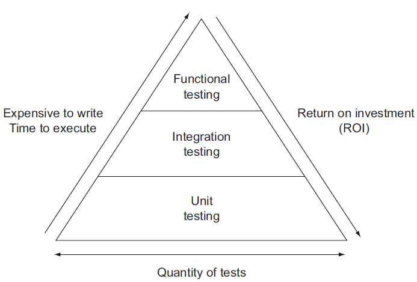

Testing#
Overview#
We use unit tests, integration tests, and functional tests to ensure that
napari works as intended. We have
Unit tests which test if individual modules or functions work correctly in isolation.
Integration tests which test if different modules or functions work properly when combined.
Functional tests which test if slices of
naparifunctionality work as intended in the whole system.
To get the most return on investment (ROI) from our coding, we strive to test as much as we can with unit tests, requiring fewer integration tests, and the least number of functional tests as depicted in the test pyramid below from softwaretestinghelp.com:

Unit tests are at the base of the pyramid because they are the easiest to write and the quickest to run. The time and effort to implement and maintain tests increases from unit tests to integration and functional tests.
Test organization#
All of napari tests are located in folders named _tests. We keep our unit
tests located in the individual folders with the modules or functions they are
testing (e.g. the tests for the Image layer are located in a _tests folder
alongside the image.py file). Our integration and functional tests are located in
the napari/_tests folder at the top of the repository.
We also strive to unit test as much of our model file and utils code independently of
our GUI code. These tests are located in the napari/layers, napari/components,
and napari/utils folders. Our GUI code is tests in the napari/_tests,
napari/_qt, napari/_vispy folders. The napari/plugins folder contains a mix
of tests.
Running tests#
To run our test suite locally, run pytest on the command line. If, for some reason
you don’t already have the test requirements in your environment, run pip install -e .[testing].
There are a very small number of tests (<5) that require showing GUI elements, (such as testing screenshots). By default, these are only run during continuous integration. If you’d like to include them in local tests, set the environment variable “CI”:
CI=1 pytest
Tips for speeding up local testing#
Very often when developing new code, you don’t need or want to run the entire test suite (which can take many minutes to finish). With pytest, it’s easy to run a subset of your tests:
# run tests in a specific subdirectory
pytest napari/components
# run tests in a specific file
pytest napari/components/_tests/test_add_layers.py
# run a specific test within a specific file
pytest napari/components/_tests/test_add_layers.py::test_add_layers_with_plugins
# select tests based on substring match of test name:
pytest napari/layers/ -k 'points and not bindings'
In general, it pays to learn a few of the tips and tricks of running pytest.
Testing coverage locally#
We always aim for good test coverage and we use codecov during continuous integration to make sure we maintain good coverage. If you’d like to test coverage locally as you develop new code, you can install pytest-cov and take advantage of a few handy commands:
# run the full test suite with coverage
pytest --cov=napari
# instead of coverage in the console, get a nice browser-based cov-report
pytest --cov=napari --cov-report=html
open htmlcov/index.html # look at the report
# run a subset of tests with coverage
pytest --cov=napari.layers.shapes --cov-report=html napari/layers/shapes
open htmlcov/index.html # look at the report
Writing tests#
Writing tests for new code is a critical part of keeping napari maintainable as
it grows. Tests are written in files whose names
begin with test_* and which are contained in one of the _tests directories.
Property-based testing with Hypothesis#
Property-based tests allow you to test that “for any X, …” - with a much nicer
developer experience than using truly random data. We use Hypothesis for unit or
integration tests where there are simple properties like x == load(save(x)) or
when Napari implements a function we can check against the equivalent in a trusted
library for at least some inputs.
See also this paper on property-based testing in science, issue #2444, and the Hypothesis documentation (including Numpy support).
Testing with Qt and napari.Viewer#
There are a couple things to keep in mind when writing a test where a Qt event
loop or a napari.Viewer is required. The important thing is that any widgets
you create during testing are cleaned up at the end of each test:
If you need a
QApplicationto be running for your test, you can use theqtbotfixture frompytest-qtnote: fixtures in pytest can be a little mysterious, since it’s not always clear where they are coming from. In this case, using a pytest-qt fixture looks like this:
# just by putting `qtbot` in the list of arguments # pytest-qt will start up an event loop for you def test_something(qtbot): ...
qtbotprovides a convenientaddWidgetmethod that will ensure that the widget gets closed at the end of the test. It also provides a whole bunch of other convenient methods for interacting with your GUI tests (clicking, waiting signals, etc…). See theqtbotdocs for details.# the qtbot provides convenience methods like addWidget def test_something_else(qtbot): widget = QWidget() qtbot.addWidget(widget) # tell qtbot to clean this widget later ...
When writing a test that requires a
napari.Viewerobject, we provide a pytest fixture calledmake_napari_viewerthat will take care of creating a viewer and cleaning up at the end of the test. When using this function, it is not necessary to use aqtbotfixture, nor should you do any additional cleanup (such as usingqtbot.addWidgetor callingviewer.close()) at the end of the test. Duplicate cleanup may cause an error. Use the fixture as follows:# the make_napari_viewer fixture is defined in napari/conftest.py def test_something_with_a_viewer(make_napari_viewer): # make_napari_viewer takes any keyword arguments that napari.Viewer() takes viewer = make_napari_viewer() # do stuff with the viewer, no qtbot or viewer.close() methods needed. ...
If you’re curious to see the actual
make_napari_viewerfixture definition, it’s innapari/conftest.py
Mocking: “Fake it till you make it”#
It can be confusing to write unit tests for individual functions, when the
function being tested in turn depends on the output from some other function or
method. This makes it tempting to write integration tests that “just test the
whole thing together”. A useful tool in this case is the mock object
library. “Mocking” lets
you patch or replace parts of the code being tested with “fake” behavior or
return values, so that you can test how a given function would perform if it
were to receive some value from the upstream code. For a few examples of using
mocks when testing napari, search the codebase for
unittest.mock